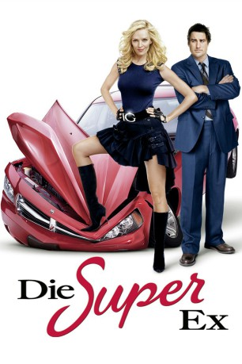
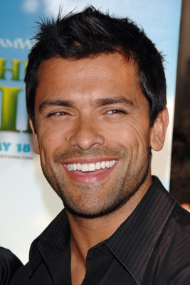

#872 Die Super-Ex
Alternativ: My Super Ex-Girlfriend
 
 IMDB-Wertung: 5.1 / 10
IMDB-Wertung: 5.1 / 10  Metascore: 50
Metascore: 50 
Der Architekt Matt ist zwar nicht gerade ein Partylöwe, hat aber in der Galleristin Jenny eine tolle Partnerin gefunden. Leider ist Jenny gewaltig eifersüchtig und durch und durch neurotisch - und außerdem das Alter Ego der Superheldin G-Girl. Als dem armen Matt das aufdringliche Verhalten seiner Freundin zu bunt wird, gibt er ihr den Laufpass und tröstet sich mit Kollegin Hannah. Aber da hat er die Rechnung ohne das Temperament und die Superkräfte seiner Ex gemacht, die nun alles tut, um Matt zurück zu gewinnen.
Jahr: 2006
Dauer: 95 Minuten
FSK: 6
Land: USA Studio: 20th Century FoxTonspuren:
Untertitel:
Auflösung: 720p (1280x536) Größe: 4474 MB
Genre: Komödie, Liebe, Sci-Fi
Regisseur: Ivan Reitman
Drehbuch: Don Payne
Soundtrack: Teddy Castellucci
Darsteller:
 Uma Thurman als Jenny Johnson / G-Girl
Uma Thurman als Jenny Johnson / G-Girl Luke Wilson als Matt Saunders
Luke Wilson als Matt Saunders Anna Faris als Hannah Lewis
Anna Faris als Hannah Lewis Rainn Wilson als Vaughn Haige
Rainn Wilson als Vaughn Haige Eddie Izzard als Professor Bedlam / Barry
Eddie Izzard als Professor Bedlam / Barry- Stelio Savante als Leo
- Mike Iorio als Lenny
-  Mark Consuelos als Steve Velard
 Wanda Sykes als Carla Dunkirk
Wanda Sykes als Carla Dunkirk- Margaret Anne Florence als Shapely Bartender
- Catherine Reitman als TV News Reporter
- Tara Thompson als Young Jenny
- Lawrence Feeney als Scary Dude
- Lou Bonacki als Parking Lot Manager
- Fallon Brooking als Young Girl
- Richard Brevard als Thief
- Peter Patrikios als Thief
- Richie Rich als Himself
 Clem Cheung als Asian Businessman
Clem Cheung als Asian Businessman- Angel Sing als Asian Businessman
- Ilona Alexandra als Aerobics Girl , uncredited
- Erin Boyes als Cheerleader , uncredited
- Edixon Caridad als Guy in Restaurant , uncredited
- Christopher DeBlasio als New York Guy , uncredited
- Kate Forsatz als NY Commuter , uncredited
- Edwin Freeman als NYPD Officer at Station , uncredited
- Andrew Friedman als Neighbor at End , uncredited
- Juliana Harkavy als Passerby , uncredited
- Olja Hrustic als Excited Girl in the Restaurant , uncredited
 Edward M. Kelahan als Taxi Driver , uncredited
Edward M. Kelahan als Taxi Driver , uncredited- Kubbi als Woman Driver , uncredited
- Isaac Orlando als Fashion Show Patron , uncredited
- Rik Parker als Guy in Restaurant , uncredited
- Brian Robinson als Tall Office Guy , uncredited
- Kenneth Simmons als Prison Guard , uncredited
 Stream als NY Shopper , uncredited
Stream als NY Shopper , uncredited- Kevin Townley als Young Barry
- Eva Veronika als Elderly Lady
- Jeff Norris als NYPD Officer at Garage
- Greg Northrop als NYPD Officer at Station
- Ron Moreno als Thief
- Santos als Thief
- Lillian Lynn als Pedestrian at Robbery
- Traver Rains als Himself
- Emily Girvin als Bride
- Abraham Sparrow als Businessman
- Clint Chin als Asian Businessman
- Ben Wang als Asian Businessman
- Tara DiGiore als Cheerleader
- Tiffany Haupt als Cheerleader
Datei: X:\2006(N-Z)\Super-Ex, Die (2006, FSK6, 1280x536).mkv seit 10.04.2015
Festplatte: HD 2005(G-Z)-2006(A-Z)
 Es gibt insgesamt 62 Filme in der Gruppe '2006(N-Z)'
Es gibt insgesamt 62 Filme in der Gruppe '2006(N-Z)'